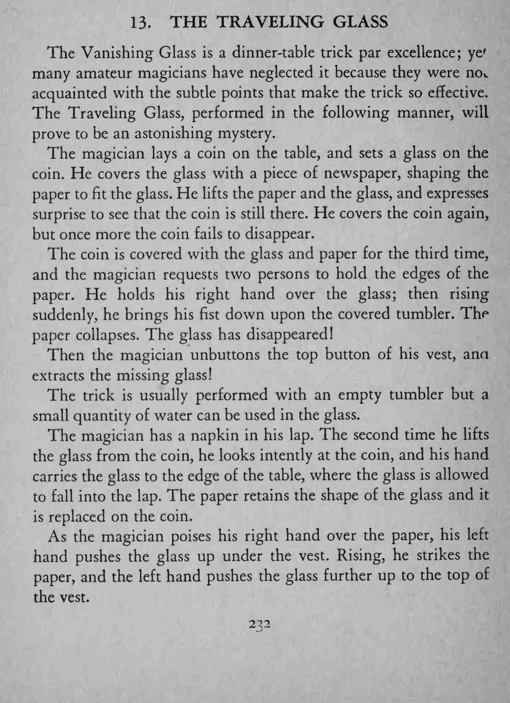
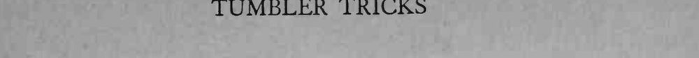

硬币被玻璃杯和报纸罩住三次都没消失；第三次魔术师一掌拍下，报纸塌下去，杯子不见了，随后从马甲里把杯子取出来。
报纸必须留下完整杯形，移杯入腿与推杯入马甲都要在观众注视硬币时完成，手不能犹豫。


The Vanishing Glass is a dinner-table trick par excellence; ye' many amateur magicians have neglected it because they were no*, acquainted with the subtle points that make the trick so effective. The Traveling Glass, performed in the following manner, will prove to be an astonishing mystery. The magician lays a coin on the table, and sets a glass on the coin. He covers the glass with a piece of newspaper, shaping the paper to fit the glass. He lifts the paper and the glass, and expresses surprise to see that the coin is still there. He covers the coin again, but once more the coin fails to disappear. The coin is covered with the glass and paper for the third time, and the magician requests two persons to hold the edges of the paper. He holds his right hand over the glass; then rising suddenly, he brings his fist down upon the covered tumbler. The paper collapses. The glass has disappeared! Then the magician unbuttons the top button of his vest, ana extracts the missing glass! The trick is usually performed with an empty tumbler but a small quantity of water can be used in the glass. The magician has a napkin in his lap. The second time he lifts the glass from the coin, he looks intently at the coin, and his hand carries the glass to the edge of the table, where the glass is allowed to fall into the lap. The paper retains the shape of the glass and it is replaced on the coin. As the magician poises his right hand over the paper, his left hand pushes the glass up under the vest. Rising, he strikes the paper, and the left hand pushes the glass further up to the top of the vest.